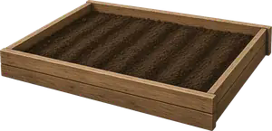
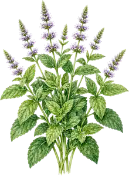
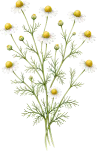
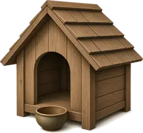
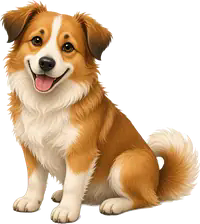

Смотрите на тропинку
Зверь выходит из леса сверху и идёт к грядке с мятой.
Показ: лиса и ёж идут из леса к грядкам
Образец · на игру не влияет
Сейчас: лиса · собака Шарик есть
Смотрите на тропинку
Зверь выходит из леса сверху и идёт к грядке с мятой.


Мята Собрать! 🐾
Ромашка Цела

ШарикОсенняя усадьба для показа: сверху лес, по середине тропинка, две грядки — мята и ромашка, внизу будка.
Кнопки сразу меняют адрес страницы. Строка «Сейчас» и табличка над зверем называют того же, кто нарисован. В игре ёж зимой спит. Здесь осень, поэтому он бодрствует. Включение Шарика в показе — не покупка и не списание монет.
Если на телефоне или компьютере включено «Уменьшить движение», звери не бегут и картинка не мигает: они спокойно появляются на следующей точке тропинки. То же самое делает ссылка «Спокойный показ» ниже.
Проверяем…
Эта страница не открывает огород и не записывает монеты, грядки и опыт. Счёт в показе — образец.